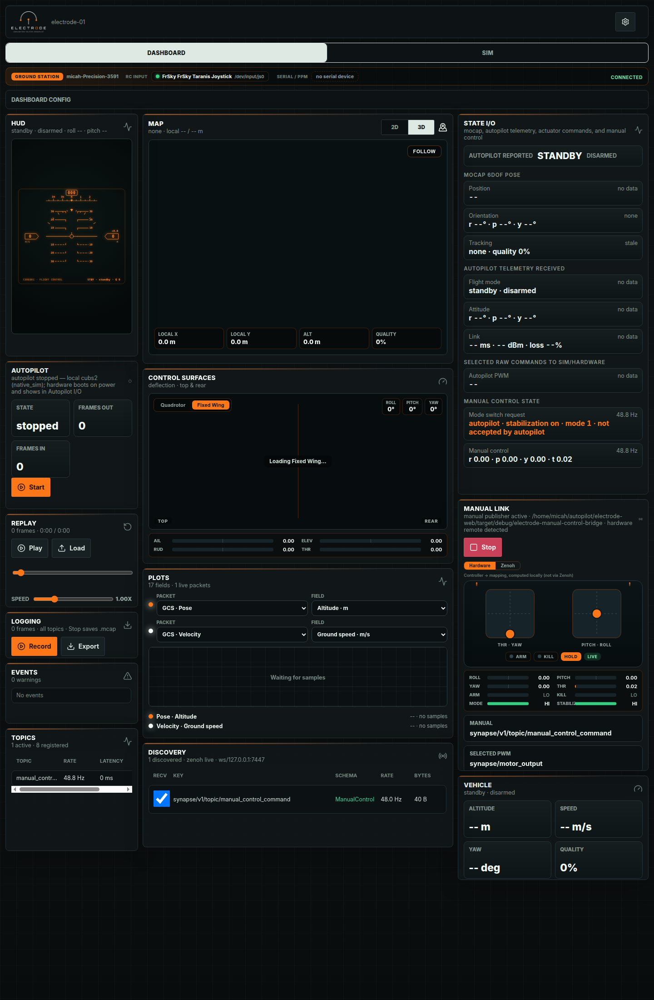
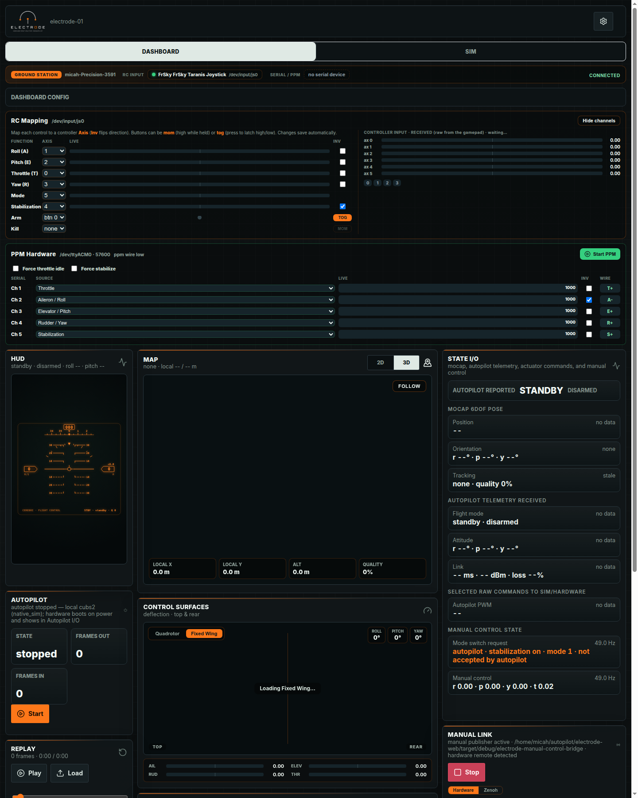
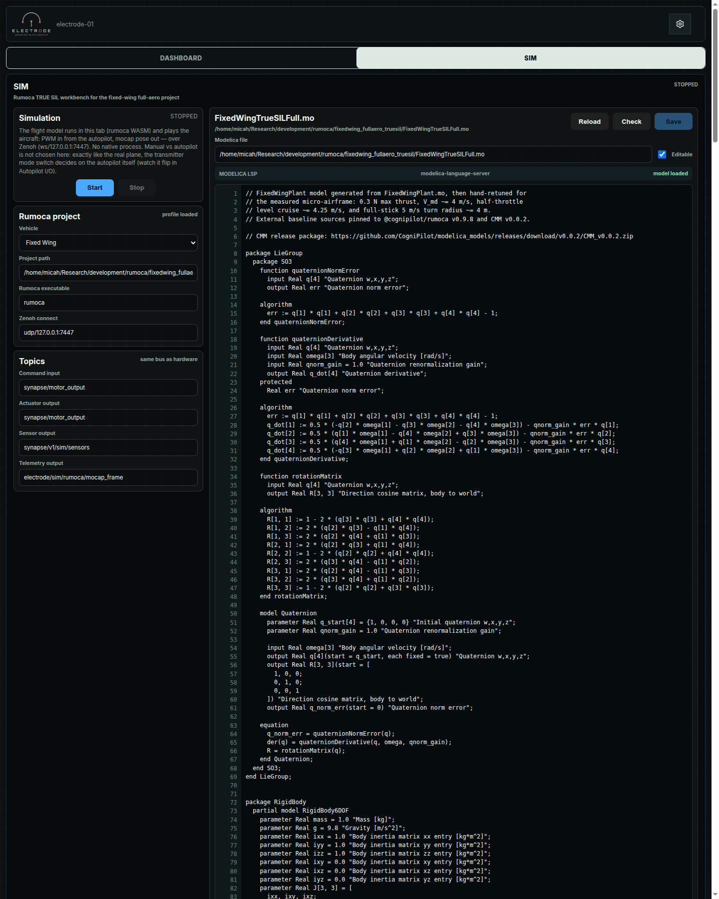
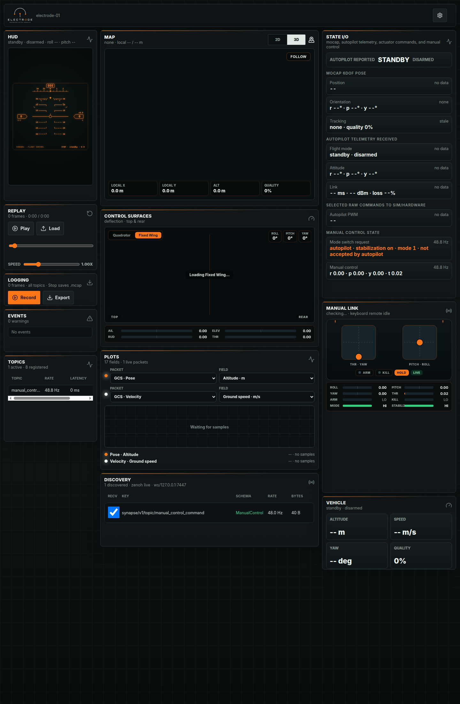

electrode-web Developer Guide
electrode-web is CogniPilot’s browser-based ground station and viewer for
Synapse/Zenoh systems. This book gathers the design notes that explain how the
web app, TypeScript SDK, Rust ground-station daemon, native bridge tools, logs,
and replay path fit together.
The book is generated the same way as the synapse_fbs docs: a pinned mdBook
version in tools.lock, a Rust xtask command, versioned output directories,
and a generated version selector for published snapshots.
Local Build
cargo install mdbook --version "$(awk -F= '/^MDBOOK_VERSION=/{print $2}' tools.lock)" --locked
cargo run --locked --manifest-path xtask/Cargo.toml -- docs --version main --out-dir target/xtask/docs
Open target/xtask/docs/main/index.html after the build completes.
Source Map
apps/webcontains the SvelteKit app used by static hosting and the local ground-station daemon.packages/electrode-sdkcontains the TypeScript state, decode, replay, plotting, and simulator-facing SDK.crates/electrode-ground-stationserves the app locally and owns host-sidegcs/*APIs.- Native Rust bridge crates connect joystick, PPM, fake simulation, and logging workflows to Zenoh/Synapse.
Start with Using The UI if you are trying to operate the app or explain the screen to someone else.
Using The UI
This page is a tour of Electrode in full Ground Station mode. Ground Station
mode is active when the app is served by electrode-ground-station and the
same-origin gcs/* APIs are available. That unlocks hardware status, RC
mapping, PPM output, autopilot control, and simulation workbench panels.

From A Fresh Clone
From the repository root:
npm ci
npm run station
npm run station builds the web app, starts the Rust Ground Station daemon,
serves the UI, and enables the local gcs/* hardware APIs. When it is ready,
open:
http://127.0.0.1:8790/
Use that local URL for simulation, RC mapping, PPM, and autopilot workflows. The static GitHub Pages viewer and the Vite dev server can display telemetry, but they cannot start local native tools or access host hardware.
First Read
Use the screen from top left to bottom right:
- Check the header for the active vehicle id and the theme/settings menu.
- Check the Ground Station strip for backend host, RC input, serial/PPM, and connection status.
- Check State I/O for whether expected Synapse topics are arriving.
- Use HUD, Map, and Vehicle for quick flight-state awareness.
- Use Manual Link and Control Surfaces to verify operator input and selected actuator output.
- Use Plots, Discovery, Topics, Replay, and Logging when debugging or recording a session.
Header
The header shows the Electrode mark, the current vehicle id, and the settings menu. The settings menu currently contains the light/dark theme toggle.
If the vehicle id is not the vehicle you expect, confirm the app was opened with the intended backend or Zenoh stream source.
Ground Station Strip
The strip below the Dashboard/SIM tabs is the backend capability summary. It reports:
- The host serving
electrode-ground-station. - The detected RC input device.
- The serial/PPM device state.
- Whether the browser is connected to the local backend.
If the strip is missing, you are in static Viewer mode. Open the app through
the local daemon, usually http://127.0.0.1:8790/, instead of a static build or
GitHub Pages URL.
Dashboard Config
Open Dashboard Config when you need to adjust physical controls or output hardware.

RC Mapping
RC Mapping maps the controller axes and buttons into Electrode’s manual control model. Use the live controller input bars on the right to identify which axis moves when you move a stick.
- Axis chooses the raw controller axis.
- Inv flips an axis direction.
- MOM means momentary, active only while held.
- TOG means toggle/latch.
Changes save through the Ground Station backend and are reflected immediately in Manual Link.
PPM Hardware
PPM Hardware maps logical control sources to serial PPM output channels. Use it when Electrode is driving an external receiver or encoder.
- The channel rows define throttle, roll, pitch, yaw, and stabilization output.
- Force throttle idle and Force stabilize are safety overrides.
- Start PPM starts the native PPM bridge when a serial device is available.
Use the live values to confirm channel order before connecting anything that can move actuators.
For hardware-in-the-loop work, the autopilot can be a real flight-control board
or the local cubs2 native simulation. The PPM bridge does not run the
autopilot; it selects between manual-control output and autopilot PWM output,
then writes the selected PPM packet to the serial encoder/receiver hardware.
Start the autopilot path first, verify Selected raw commands to
sim/hardware, then start PPM output.
HUD
The HUD is the quickest attitude readout. It summarizes standby/arming, roll, and pitch in the panel subtitle, then renders a flight-display style view with heading, pitch ladder, roll marker, speed, and altitude.
When telemetry is missing, the subtitle shows -- values. Treat that as a data
path problem before debugging the visualization itself.
Map
The Map panel is the position view. The 2D/3D switch changes between a
flat mission-style map and the local 3D scene. Follow recenters the view on
the vehicle.
The bottom chips show local X, local Y, altitude, and localization quality.
If quality is 0% or the subtitle says no fix, check mocap/GNSS/local-pose
topics in State I/O and Discovery.
State I/O
State I/O is the data-contract panel. It groups the key flows Electrode expects:
- Autopilot reported: vehicle mode and arming status.
- Mocap 6DOF pose: position, orientation, and tracking freshness.
- Autopilot telemetry received: flight mode, attitude, and link data.
- Selected raw commands to sim/hardware: actuator/PWM command stream.
- Manual control state: mode-switch request and manual-control values.
Use this panel first when a downstream panel looks wrong. If State I/O says
no data or stale, the UI is faithfully reporting that the topic has not
arrived or has timed out.
In Ground Station mode, the manual-control rows can update even without vehicle telemetry because the backend can publish local joystick state.
Replay
Replay loads MCAP recordings and feeds them through the same worker/state pipeline used by live data. Use the play/pause button, load button, timeline, and speed slider to inspect previous sessions.
Replay is useful for UI work because it lets you reproduce a vehicle state without hardware.
Logging
Logging records live topics into MCAP. Press Record before the event you want to capture, press it again to stop, then Export to download the file.
The counter reports how many frames are buffered. A stopped recording is what
saves the .mcap export cleanly.
Events
Events is the short operational log. Warnings and errors appear here when the state store or bridge observes something the operator should notice.
If the UI looks quiet but behavior feels wrong, check this panel before opening developer tools.
Topics
Topics lists active registered topic snapshots with rate and latency. It is a compact way to see whether Electrode knows about a stream, how fast it is arriving, and whether it is late.
In Viewer mode with no backend or Zenoh stream, this panel is expected to say
No topics.
Control Surfaces
Control Surfaces visualizes the currently selected command output as aircraft deflections. Switch between Quadrotor and Fixed Wing to match the vehicle model you are inspecting.
Use this beside Manual Link: Manual Link shows operator intent, while Control Surfaces shows what that intent or selected autopilot output becomes.
Plots
Plots graphs selected fields from live or replayed packets. Choose a packet and field for each trace, then watch the plot and legend for last values and ranges.
Start with altitude and ground speed when checking whether replay/live decoding is working. Add attitude, link, or control fields once the basic stream is healthy.
Discovery
Discovery shows raw observed Zenoh keys, schemas, rates, and byte counts. Use it when a stream exists but Electrode is not decoding it into a higher-level panel.
The usual debugging sequence is:
- Confirm the key appears in Discovery.
- Confirm the schema/bytes look plausible.
- Confirm the matching State I/O row is fresh.
- Then inspect the visual panel that consumes that state.
Manual Link
Manual Link displays controller sticks, arm/kill state, signal state, axis values, and the manual-control topic it is waiting for.
In Ground Station mode, the Hardware tab shows locally computed joystick
state before it leaves the machine. The Zenoh tab shows the actual
synapse/v1/topic/manual_control_command stream after publication. Compare
them when debugging mapping, transport, or stale-command behavior.
When no RC controller is plugged in and the native manual publisher is stopped,
Electrode enables a keyboard fallback. The Manual Link subtitle says
keyboard remote active when this path is live.
Keyboard controls:
- Arrow left/right: roll.
- Arrow up/down: pitch.
A/D: yaw.W/S: throttle up/down.M: toggle manual/autopilot mode request.T: toggle stabilization active.
The keyboard path is meant for bench testing and simulation bring-up, not for flying hardware.
Vehicle
Vehicle is the compact summary: altitude, speed, yaw, and quality. It is the panel to glance at when the larger HUD/Map panels are off screen.
If Vehicle disagrees with HUD or Map, prefer State I/O as the source of truth and check whether one of the panels is using stale data.
Sim Bring-Up
Use this sequence when you want the browser plant, local autopilot, manual input, and Ground Station display all working together.
1. Open The Full Ground Station
Start the app through the Ground Station command if it is not already running:
npm run station
Then open the local daemon URL:
http://127.0.0.1:8790/
Confirm the Ground Station strip says Connected. Also check the same strip for the RC input device and serial/PPM status. If the Ground Station strip is missing, you are in static Viewer mode and cannot start the local autopilot or simulation from the UI.
2. Check The Dashboard Config
Open Dashboard Config before starting anything that can publish commands.
Confirm RC Mapping moves the expected axes when you move the sticks. If an axis moves backward, flip Inv for that row. Confirm the mode switch row changes when you move the controller mode switch.
Confirm PPM Hardware only if you are using serial PPM output. For pure simulation, PPM hardware can stay stopped.
3. Start Manual Publishing
If an RC controller is attached, press Start in Manual Link when the
manual publisher is stopped. The panel should show Hardware as live and the
manual_control_command topic.
If no RC controller is attached, leave the native manual publisher stopped and
use the keyboard fallback. The panel should say keyboard remote active.
Then check State I/O -> Manual control state. It should show fresh data at
roughly controller rate. If it says waiting for manual_control_command, fix
manual publishing before starting the sim.
4. Put The Mode Switch In The Intended Mode
The sim does not choose manual or autopilot mode. It behaves like the aircraft:
the transmitter mode switch sends manual_control_command.flight_mode, and the
autopilot decides whether to accept that mode.
Use these checks:
- Manual mode: State I/O -> Mode switch request should read
manualor mode0. - Autopilot mode: State I/O -> Mode switch request should read
autopilotor mode1+. - Accepted autopilot mode: Autopilot reported should change to
auto. - Mismatch: if Mode switch request says
autopilot ... not accepted by autopilot, the switch request is reaching Electrode but the autopilot has not accepted that mode yet.
For a closed-loop sim test, put the switch in autopilot mode and wait for
Autopilot reported to show auto. For a manual plant test, leave the
switch in manual mode and verify Control Surfaces responds to stick input.
5. Start The Autopilot
On the Dashboard, find Autopilot and press Start. The panel should move
from stopped to running · pid ....
For the default local workflow this starts the cubs2 native simulation. For
PPM or hardware-in-the-loop workflows, the autopilot may instead be a real
flight-control board that boots on power; in that case use State I/O and
Autopilot reported to verify it is producing telemetry before enabling PPM
output.
Watch Frames out and Frames in:
- Frames out means Electrode is forwarding commands/sensor data toward the autopilot link.
- Frames in means the autopilot is sending data back.
If the process starts but frame counts stay at zero, check the Zenoh endpoint and the autopilot profile before debugging the UI.
6. Start The SIM Tab
Open SIM and press Start in the Simulation panel. Leave the topic names at their defaults unless you intentionally changed the rest of the stack.
After the sim starts, return to Dashboard and check:
- Discovery should show new sim/autopilot topics.
- State I/O -> Mocap 6DOF pose should become fresh.
- State I/O -> Autopilot telemetry received should become fresh.
- Map and HUD should stop showing only placeholder values once state is flowing.
7. Verify The Control Path
Use the panels together:
- Manual Link: confirms local joystick and published manual-control state.
- State I/O: confirms the requested mode and whether the autopilot accepts it.
- Selected raw commands to sim/hardware: confirms the command stream that the plant receives.
- Control Surfaces: visualizes the selected output.
- Plots: graph altitude, ground speed, attitude, or control fields once samples are flowing.
8. Shut Down In Reverse
Stop the sim first, then stop the autopilot, then stop manual publishing if you are done with the controller. Export any logs before closing the tab.
SIM
The SIM tab is the Rumoca TRUE SIL workbench. It runs the flight model in the browser tab with Rumoca WASM and uses the same Zenoh topic contract as the hardware path.

Use the left column to choose the vehicle kind, Rumoca project path, executable, Zenoh endpoint, and topic names. Use Start and Stop to control the in-browser plant.
Use the editor on the right to inspect or edit the Modelica file. Reload pulls the file from disk, Check validates the configured model, and Save writes changes when the file is editable.
Simulation publishes mocap-like pose output and consumes the selected actuator command stream, so it is most useful when checking the whole command path:
- Start manual publishing.
- Put the mode switch in the intended mode.
- Start the autopilot.
- Start the sim.
- Confirm the command, sensor, and telemetry topics in Discovery.
- Confirm State I/O receives fresh mocap and telemetry.
- Use HUD, Map, Plots, and Manual Link to inspect behavior.
Static Viewer Mode
Static Viewer mode is what the same app shows when no local Ground Station
daemon answers gcs/health. Hardware panels, Dashboard Config, and SIM are not
available, but live Zenoh-over-WebSocket, replay, logging, plots, discovery,
and visualization still work.

Use ?viewer to force this mode even when the app is served by the daemon.
electrode Architecture
electrode uses one UI codebase and one protocol boundary across browser, replay, and native bridge modes.
Vehicle / simulator
-> Zenoh + FlatBuffers
-> electrode-ground-bridge or zenoh-wasm
-> WebSocket bridge or Zenoh WebSocket transport
-> electrode web app + worker + SDK
The browser owns operator interaction, visualization, constrained command intent, replay, and diagnostics. It never owns hardware access, raw actuator authority, or safety-critical watchdogs.
The browser can publish command intent directly through @cognipilot/zenoh-wasm when connected to a Zenoh router WebSocket endpoint. The current published package exposes async session open and put APIs but no subscriber API, so live telemetry is received through the native electrode-ground-bridge: it subscribes to synapse/**, tracks a discovery catalog of every observed key (rate, size, decodability), decodes the Synapse tables it understands into GCS frames, and forwards operator-selected topics to the browser over WebSocket. Simulator and replay remain available as offline sources.
The native bridge owns Zenoh connectivity, allowlists, command sequence checks, stale command rejection, local logging, telemetry forwarding, and future hardware integration.
The Rust/WASM core owns message validation, schema-version checks, unit conversion, stale-message checks, and future FlatBuffer encode/decode shared with native tools.
Physical Deployment
Electrode is the ground-station client and should not absorb every edge bridge on the network. Hardware-adjacent bridges stay with the machine that owns that hardware, then publish or route typed Zenoh topics for clients that request them.
Mocap Windows computer
-> Qualisys QTM
-> synapse-qualisys-bridge
-> Zenoh router/listener: udp,tcp/<mocap-pc-ip>:7447
-> synapse/mocap/**
Ground-station computer
-> electrode web app
-> @cognipilot/zenoh-wasm or electrode-ground-bridge
-> subscribes only to required Zenoh key expressions
Flight-control computer
-> Zephyr native_sim, QEMU Cerebri, NUC-hosted autopilot, or USB/FTDI-connected Cerebri hardware
-> Synapse topics for vehicle state, commands, manual control, and actuator/control outputs
The Qualisys bridge belongs on the mocap Windows computer because it owns the QTM connection, QTM component selection, Windows installer/update flow, and embedded Zenoh router/listener. Electrode should discover or configure its endpoint and consume synapse/mocap/** topics, not vendor the bridge runtime into the GCS app.
This keeps traffic shaping at the correct boundary: the mocap bridge publishes selected motion-capture streams into Zenoh, and Zenoh routes only the key expressions requested by downstream clients instead of forcing every ground-station client to receive a raw QTM UDP stream.
Mocap Wire Contract
Every mocap producer — the Qualisys bridge on real hardware, and the Ground Station’s sim bridge when a plant (in-browser Rumoca WASM or the native sim executable) is running — publishes the same three topics, so downstream consumers cannot tell simulation from a live capture volume:
| Topic | Payload |
|---|---|
synapse/mocap/frame | synapse.topic.MocapFrame FlatBuffer (rigid bodies, markers, timing) |
synapse/mocap/rigid_body/<name>/pose | Compact 28 bytes: little-endian f32 [px, py, pz, qx, qy, qz, qw] |
synapse/mocap/definition | synapse.topic.MocapDefinition FlatBuffer, published once per stream |
Conventions (synapse_fbs 0.3.0 mocap.fbs): positions are ENU metres; the attitude quaternion rotates body FLU vectors into the mocap ENU frame, and the compact payload carries its scalar component last. Producers must deliver an FLU-aligned body frame — in QTM that means defining the rigid body with X forward, Y left, Z up; consumers apply no per-body corrections.
Sim plants publish MocapFrame FlatBuffers on the private electrode/sim/rumoca/mocap_frame topic only; the Ground Station sim bridge verifies and republishes them on the public contract above. The autopilot link forwards synapse/mocap/rigid_body/** payloads verbatim to cubs2, whose csyn_decode_mocap_frame accepts both the compact pose and the full FlatBuffer.
Message Lifecycle
Live telemetry and replay data use the same envelope:
topic
header
payload
The header includes sequence number, source time, receive time, expiration time, vehicle id, schema version, message type, priority, and stream id.
Receiver policy:
- Reject unknown schema versions.
- Drop expired messages.
- Drop older messages from the same stream.
- Mark topics stale when their timeout is exceeded.
- Render latest state, not every high-rate sample.
Replay feeds recorded envelopes into the same worker and state store used by live bridge data.
Logs
Ground-station recordings use MCAP files with FlatBuffer schema records. Live
Synapse topic schemas come from the published @cognipilot/synapse-fbs and
synapse_fbs packages, which ship pregenerated .bfbs reflection schemas; the
FlatBuffers compiler is not part of normal development or CI.
The browser exports .mcap files with:
- MCAP profile
synapse flatbufferschema encoding and message encoding- BFBS schema data for
electrode.gcs.GcsFrame - one channel per captured Zenoh topic
electrode.recordingmetadata for source, description, and creation time
Each browser-recorded message payload is an electrode.gcs.GcsFrame FlatBuffer
with file identifier EGCS. GcsFrame wraps the typed state/event payloads in a
FlatBuffer union, so replay does not depend on JSON. The replay loader can also
read native Synapse MCAP channels when their payloads match the SDK’s current
Synapse decoder.
Topic Conventions
Topics use the form:
vehicle/{id}/{domain}/{name}
Initial topics:
vehicle/{id}/state/pose
vehicle/{id}/state/velocity
vehicle/{id}/state/attitude
vehicle/{id}/state/battery
vehicle/{id}/state/link
vehicle/{id}/state/mode
vehicle/{id}/state/localization
vehicle/{id}/event
vehicle/{id}/cmd/arm
vehicle/{id}/cmd/disarm
vehicle/{id}/cmd/mode
vehicle/{id}/cmd/land
vehicle/{id}/cmd/return
vehicle/{id}/mission/upload
vehicle/{id}/mission/status
vehicle/{id}/param/get
vehicle/{id}/param/set
vehicle/{id}/log
Every registered topic defines schema name, expected rate, stale timeout, display units, logging behavior, and command authority requirement.
Manual Control and PPM Bridge
Electrode treats manual control as a first-class ground-station workflow with a native hardware boundary.
gamepad / joystick / touch input
-> electrode-manual-control-bridge
-> Synapse ManualControlData bare struct
-> Zenoh key expression: synapse/v1/topic/manual_control_command
autopilot control output
-> Synapse PwmSignalOutputsData bare struct
-> Zenoh key expression: synapse/v1/topic/pwm_signal_outputs
synapse/v1/topic/manual_control_command + synapse/v1/topic/pwm_signal_outputs
-> electrode-ppm-bridge
-> selected PWM: synapse/motor_output
-> serial PPM encoder packet
-> RC receiver
The browser or desktop UI owns input selection, arming of the manual-control session, calibration display, and operator feedback. Native bridge binaries own Linux joystick access, Zenoh publishing/subscribing, serial access, and the packet contract used by the encoder hardware.
Manual Input Bridge
Run the joystick/gamepad bridge from the Electrode workspace:
npm run manual:bridge -- \
--device /dev/input/js0 \
--zenoh-connect udp/127.0.0.1:7447 \
--topic synapse/v1/topic/manual_control_command
Useful options:
--publish-hz 50
--stale-ms 250
--roll-axis 1
--pitch-axis 2
--yaw-axis 3
--throttle-axis 0
--mode-axis 5
--active-axis 4
--invert-active true
--arm-button INDEX
--kill-button INDEX
The bridge publishes synapse.topic.ManualControlData bare structs. The mode switch selects the output source: manual mode passes transmitter sticks through; auto mode passes autopilot PWM output through. The active/stabilization switch is independent and only drives the stabilization radio channel.
Use the dump tool to inspect published values:
npm run manual:dump -- --topic synapse/v1/topic/manual_control_command
PPM Bridge
Run the PPM bridge from the Electrode workspace:
npm run ppm:bridge -- \
--zenoh-connect udp/127.0.0.1:7447 \
--manual-topic synapse/v1/topic/manual_control_command \
--control-output-topic synapse/v1/topic/pwm_signal_outputs \
--pwm-output-topic synapse/motor_output \
--serial-device /dev/ttyACM0 \
--baud-rate 57600
Useful environment variables:
JOYSTICK_DEVICE=/dev/input/js0
ZENOH_CONNECT=udp/127.0.0.1:7447
ZENOH_TOPIC=synapse/v1/topic/manual_control_command
ZENOH_CONTROL_OUTPUT_TOPIC=synapse/v1/topic/pwm_signal_outputs
ZENOH_PWM_OUTPUT_TOPIC=synapse/motor_output
PPM_SERIAL_DEVICE=/dev/ttyACM0
PPM_BAUD_RATE=57600
PPM_CHANNEL_MAP=0,1,2,3,4
The PPM bridge selection rules are:
ManualControl valid=true, kill_switch=false, flight_mode=0 -> manual channels
ManualControl valid=true, kill_switch=false, flight_mode>0 -> latest autopilot PWM channels
ManualControl valid=false or kill_switch=true -> failsafe channels
Base channel order before PPM_CHANNEL_MAP:
0 throttle
1 aileron / roll
2 elevator / pitch
3 rudder / yaw
4 stabilization
The stabilization channel is operator-owned even in auto mode. The PPM bridge preserves channel 4 from manual input while using autopilot channels 0-3 in auto mode.
synapse/v1/topic/pwm_signal_outputs and synapse/motor_output are interpreted as synapse.topic.PwmSignalOutputsData bare structs. The first five PWM outputs map to throttle, roll, pitch, yaw, stabilization before channel-map/invert settings are applied.
The serial packet is 14 bytes:
0xffff header, five little-endian u16 channels, little-endian u16 checksum
The checksum is the wrapping sum of the five transmitted channel values.
Safety Boundary
Failsafe channels are:
throttle 1000
roll 1500
pitch 1500
yaw 1500
mode 2000
Serial device access should remain in the native bridge or Tauri shell, not in the browser.
Command Safety Model
The web app sends operator intent. It does not directly publish raw Zenoh messages or actuator authority.
Command path:
UI intent
-> command builder
-> schema and precondition checks
-> operator confirmation when required
-> bridge allowlist
-> command publish
-> ack, reject, or timeout shown in UI
The browser checks obvious operator-facing preconditions. The bridge remains the authority for allowlists, vehicle selection, command sequence monotonicity, expiration, and disconnect behavior.
In direct zenoh mode, the browser publishes command intents with @cognipilot/zenoh-wasm to the registered command key expression. That path is useful for early integration against a Zenoh WebSocket router, but it does not replace bridge-side authorization or vehicle-side ack/reject handling.
Initial commands:
- arm
- disarm
- set mode
- land
- return
- clear mission
- upload mission placeholder
- set parameter placeholder
electrode Roadmap
This workspace implements the first practical vertical slice from the Cerebri web GCS roadmap under the project name electrode.
Phase 0
- Architecture, topic conventions, message lifecycle, and safety documentation.
Phase 1
- npm and Cargo workspaces.
- SvelteKit app.
- Rust/WASM protocol crate.
- TypeScript SDK package.
- Native bridge crate.
- FlatBuffer schema generation hook.
Phase 2
- Common, state, command, event, mission, and parameter schemas.
- Typed topic registry.
- Schema-version validation in Rust and TypeScript.
Phase 3
- Native bridge MVP with browser-safe WebSocket endpoint.
- Direct browser command publishing with
@cognipilot/zenoh-wasm. - Topic and command allowlists in bridge mode.
- Synthetic bridge telemetry until native Zenoh telemetry integration or WASM subscriber support is wired.
Phase 4
- Browser worker for WebSocket, replay, latest-wins state, stale-topic tracking, message rates, and latency.
Phase 5
- Operator-useful GCS: connection, vehicle status, map, events, topic inspector, and command panel.
Later phases add real Zenoh integration, log persistence, mission editing, parameters, PURT workflows, Tauri packaging, and measured low-latency side channels.